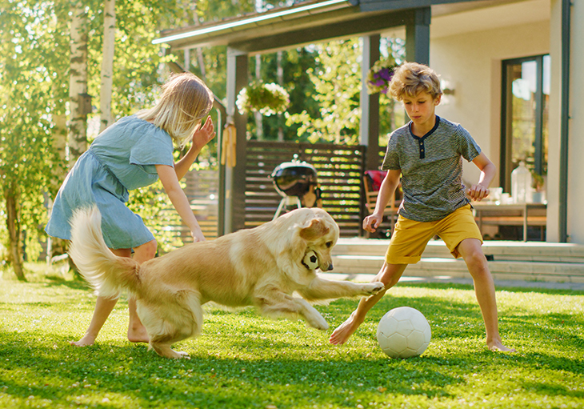

Every year, hundreds of animals are left in shelters across the country. Every year, people are in search of furry, feathered, and scaled companions. Tindogs is an app that brings these two sides together, and helps to create longlasting connections.

How Tindogs Works
Members on both sides, the shelters and the adopters, make accounts for describing themselves (or thier animal). The potential adoptees can then go through a variety of different animals and "match" with the ones that they want to take home. Once a match is made, the two parties can then begin chatting! Tindogs makes animal adoption a walk in the park.
There really is something for everyone on Tindogs. So what are you waiting for? Make an animal’s dreams come true with the one thing they’re missing... you!